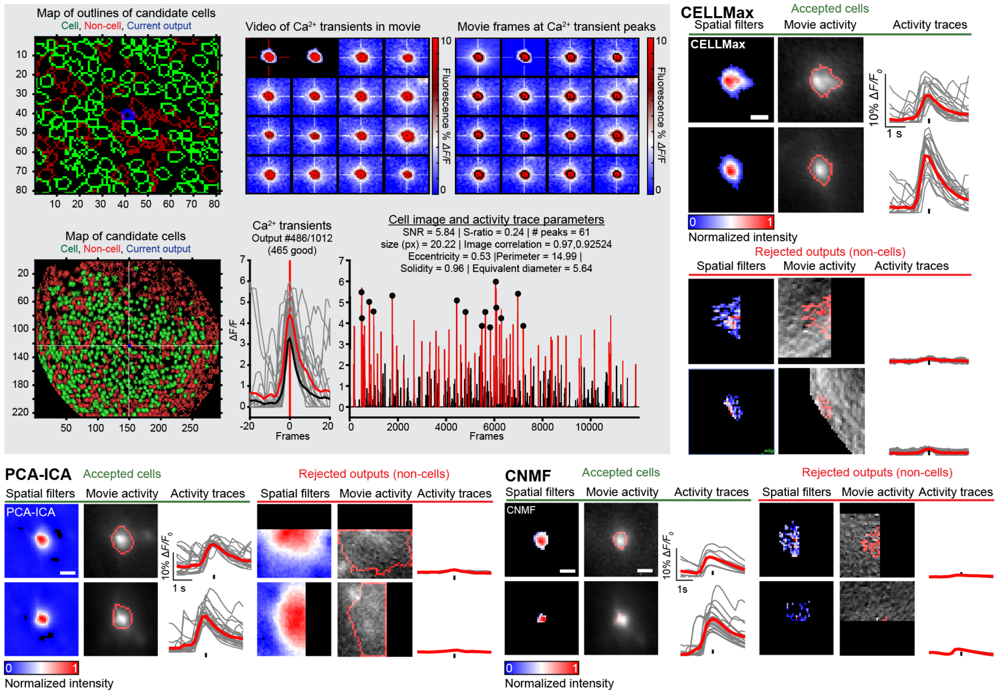
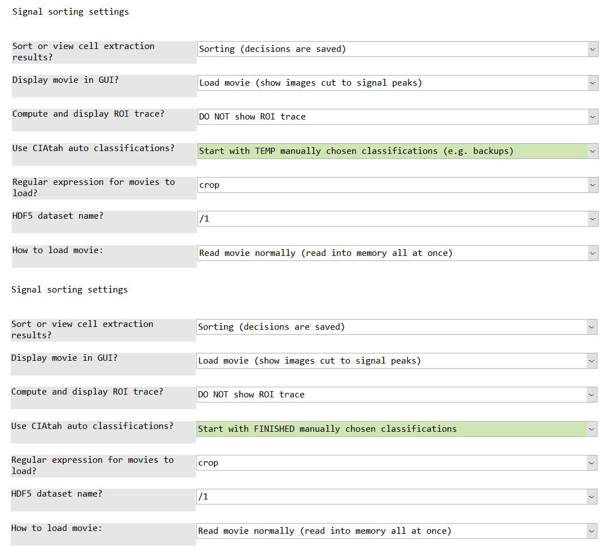

Detailed CIAtah processing pipeline¶
The following detailed pipeline assumes you have started a CIAtah object using the below command:
obj = ciatah;
This is the one-page version of the guide. Visit the individual pages by using the sidebar at left, can be easier to follow for some.
title: Spatially downsample raw movies or convert to HDF5
Spatially downsample raw movies or convert to HDF5 with modelDownsampleRawMovies¶
Users have the ability to spatially downsample raw movies, often necessary to denoise the data, save storage space, and improve runtimes of later processing steps. For most data, users can downsample 2 or 4 times in each spatial dimension while still retaining sufficient pixels per cell to facilitate cell-extraction.
To run, either select modelDownsampleRawMovies in the GUI menu or type the below command after initializing a {{ site.name }} obj.
obj.modelDownsampleRawMovies;
This will pop-up the following screen. Users can
- input several folders where ISXD files are by separating each folder path with a comma (
Folder(s) where raw HDF5s are located),
- specify a common root folder to save files to (
Folder to save downsampled HDF5s to:),
- and input a root directory that contains the sub-folders with the raw data (
Decompression source root folder(s)).
The function will automatically put each file in its corresponding folder, make sure folder names are unique (this should be done anyways for data analysis reasons).

Converting Inscopix ISXD files to HDF5¶
To convert from Inscopix ISXD file format (output by nVista v3+ and nVoke) to HDF5 run modelDownsampleRawMovies without changing the regular expression or make sure it looks for .*.isxd or similar. Users will need the latest version of the Inscopix Data Processing Software as these functions take advantage of their API. If {{ site.name }} cannot automatically find the API, it will ask the user to direct it to the root location of the Inscopix Data Processing Software (see below).

title: Check movie registration before pre-processing
Check movie registration before pre-processing with viewMovieRegistrationTest¶
Users should spatially filter one-photon or other data with background noise (e.g. neuropil). To get a feel for how the different spatial filtering affects SNR/movie data before running the full processing pipeline, run viewMovieRegistrationTest module. Then select either matlab divide by lowpass before registering or matlab bandpass before registering then change filterBeforeRegFreqLow and filterBeforeRegFreqHigh settings, see below.
Within each folder will be a sub-folder called preprocRunTest inside of which is a series of sub-folders called preprocRun## that will contain a file called settings.mat that can be loaded into modelPreprocessMovie so the same settings that worked during the test can be used during the actual pre-processing run.

-
You'll get an output like the below:
- A: The top left is without any filtering while the other 3 are with different bandpass filtering options.
- B: Cell ΔF/F intensity profile from the raw movie. Obtain by selecting
Analyze->Plot profilefrom Fiji menu after selecting a square segment running through a cell.
- C: Same cell ΔF/F intensity profile from the bottom/left movie (note the y-axis is the same as above). Obtained in same manner as B.

title: Preprocessing calcium imaging movies
Preprocessing calcium imaging movies with modelPreprocessMovie¶
After users instantiate an object of the {{ site.name }} class and enter a folder, they can start preprocessing of their calcium imaging data with modelPreprocessMovie.
- See below for a series of windows to get started, the options for motion correction, cropping unneeded regions, Δ_F/F_, and temporal downsampling were selected for use in the study associated with this repository.
- There is also support for various other types of movie corrections, such as detrending a movie using linear or higher-order fits to remove the effects of photobleaching.
- If users have not specified the path to Miji, a window appears asking them to select the path to Miji's
scriptsfolder.
- If users are using the test dataset, it is recommended that they do not use temporal downsampling.
- Vertical and horizontal stripes in movies (e.g. CMOS camera artifacts) can be removed via
stripeRemovalstep. Remember to select correctstripOrientationRemove,stripSize, andstripfreqLowExcludeoptions in the preprocessing options menu.

Next the user is presented with a series of options for motion correction, image registration, and cropping.:
- The options highlighted in green are those that should be considered by users.
- Users can over their mouse over each option to get tips on what they mean.
- In particular, make sure that
inputDatasetNameis correct for HDF5 files and thatfileFilterRegexpmatches the form of the calcium imaging movie files to be analyzed.
- After this, the user is asked to let the algorithm know how many frames of the movie to analyze (defaults to all frames).
- Then the user is asked to select a region to use for motion correction. In general, it is best to select areas with high contrast and static markers such as blood vessels. Stay away from the edge of the movie or areas outside the brain (e.g. the edge of microendoscope GRIN lens in one-photon miniature microscope movies).

Save/load preprocessing settings¶
Users can also enable saving and loading of previously selected pre-processing settings by changing the red option below.

Settings loaded from previous run (e.g. of modelPreprocessMovie) or file (e.g. from viewMovieRegistrationTest runs) are highlighted in orange. Settings that user has just changed are still highlighted in green.

The algorithm will then run all the requested preprocessing steps and presented the user with the option of viewing a slice of the processed file. Users have now completed pre-processing.

title: Manual movie cropping.
Manual movie cropping with modelModifyMovies¶
If users need to eliminate specific regions of their movie before running cell extraction, that option is provided. Users select a region using an ImageJ interface and select done when they want to move onto the next movie or start the cropping. Movies have NaNs or 0s added in the cropped region rather than changing the dimensions of the movie.
This is generally advised for movies such as miniature microscope movies imaged through a GRIN lens probe where the outside or edge or the GRIN lens are visible. This can lead to large fluctuations that can throw off some algorithms (e.g. PCA-ICA can end up assigning many components to these "signals").

title: Automated cell extraction.
Extracting cells with modelExtractSignalsFromMovie¶
Users can run the following cell-extraction algorithms:
- <a href='https://searchworks.stanford.edu/view/11513617'>CELLMax</a>
- <a href='https://github.com/mukamel-lab/CellSort'>PCA-ICA</a>
- <a href='https://github.com/flatironinstitute/CaImAn-MATLAB' target='_blank'>CNMF</a>
- <a href='https://github.com/zhoupc/CNMF_E'>CNMF-E</a>
- <a href='https://github.com/schnitzer-lab/EXTRACT-public' target='_blank'>EXTRACT</a>
- etc.
by following the below set of option screens. Details on running the new Schnitzer lab cell-extraction methods (e.g. CELLMax) will be added here after they are released.
We normally estimate the number of PCs and ICs on the high end, manually sort to get an estimate of the number of cells, then run PCA-ICA again with IC 1.5-3x the number of cells and PCs 1-1.5x number of ICs.
To run CNMF or CNMF-E, run loadDependencies module (e.g. obj.loadDependencies) after {{ site.name }} class is loaded. CVX (a CNMF dependency) will also be downloaded and cvx_setup run to automatically set it up.

The resulting output (on Figure 45+) at the end should look something like:

PCA-ICA (Mukamel, 2009)¶
There are several parameters for PCA-ICA that users can input, these are µ, term_tol, max_iter, and the number of PCs and ICs to request.
Mukamel, 2009 (µ)¶
The original Mukamel, 2009 (https://doi.org/10.1016/j.neuron.2009.08.009) paper describing PCA-ICA gives an explanation of µ:

Fig. S3 also provides some information on the effects that varying µ from 0 to 1 have on cell extraction quality (we have often found lower values, e.g. 0.1, to work well in most cases):

Ahanonu, 2022 (µ and # of PCs/ICs)¶
We also describe µ in our recent calcium imaging experiments and analysis book chapter, see section 3.15 Extraction of Neuron Shapes, Locations, and Activity Traces: https://link.springer.com/protocol/10.1007/978-1-0716-2039-7_13#Sec19.
Further, we make a note about choosing the number

term_tol¶
The term_tol parameter is the ICA termination tolerance, e.g. when min difference between ICA iterations is below this value, the algorithm will exit (if it has not already reached max_iter).
max_iter¶
The max_iter parameter determines how many iterations ICA will run before terminating.
CNMF (Pnevmatikakis et al. 2016)¶
CNMF (Constrained Nonnegative Matrix Factorization) uses a modified version of NMF to reduce crosstalk between signals and also outputs model-based traces with reduced noise. It is recommended that users compare both the model-based, smoothed traces and the more noisy dF/F traces extracted from the movie as each can be useful for different types of analyses.
A description of many of the parameters can be found at https://caiman.readthedocs.io/en/master/Getting_Started.html#parameters.
CNMF-e (Zhou et al. 2018)¶
Use CNMF-e primarily on one-photon datasets or those with large background fluctuations, it will generally perform better than CNMF in those situations.
- An overview of the CNMF-e model can be found at https://github.com/zhoupc/CNMF_E/wiki/Model-overview.
- Inscopix provides a good description of parameters at: https://github.com/inscopix/inscopix-cnmfe/blob/main/docs/parameter_tuning.md.
EXTRACT (Inan et al. 2021)¶
EXTRACT improves signal estimation via robust estimation to reduce contamination from surrounding noise sources (be they nearby cells or background activity).
A description of EXTRACT parameters can be found at https://github.com/schnitzer-lab/EXTRACT-public#advanced-aspects.¶
title: Loading cell extraction data.
Loading cell-extraction output data for custom scripts¶
Users can load outputs from cell extraction using the below command. This will then allow users to use the images and activity traces for downstream analysis as needed.
[inputImages,inputSignals,infoStruct,algorithmStr,inputSignals2] = ciapkg.io.loadSignalExtraction('pathToFile');
Note, the outputs correspond to the below:
inputImages- 3D or 4D matrix containing cells and their spatial information, format: [x y nCells].
inputSignals- 2D matrix containing activity traces in [nCells nFrames] format.
infoStruct- contains information about the file, e.g. the 'description' property that can contain information about the algorithm.
algorithmStr- String of the algorithm name.
inputSignals2- same as inputSignals but for secondary traces an algorithm outputs.
Loading cell-extraction output data with modelVarsFromFiles¶
In general, after running cell-extraction (modelExtractSignalsFromMovie) on a dataset, run the modelVarsFromFiles module. This allows {{ site.name }} to load/pre-load information about that cell-extraction run.
If you had to restart MATLAB or are just loading {{ site.name }} fresh but have previously run cell extraction, run this method before doing anything else with that cell-extraction data.
A menu will pop-up like below when modelVarsFromFiles is loaded, you can normally just leave the defaults as is.

title: Validating cell extraction data.
Validating cell extraction with viewCellExtractionOnMovie¶
After users have run cell extraction, they should check that cells are not being missed during the process. Running the method viewCellExtractionOnMovie will create a movie with outlines of cell extraction outputs overlaid on the movie.
Below is an example, with black outlines indicating location of cell extraction outputs. If users see active cells (red flashes) that are not outlined, that indicates either exclusion or other parameters should be altered in the previous modelExtractSignalsFromMovie cell extraction step.

title: Sorting cell extraction outputs.
Sorting cell extraction outputs with computeManualSortSignals¶
{{ site.name }} cell sorting GUI

Outputs from most common cell-extraction algorithms like PCA-ICA, CNMF, etc. contain signal sources that are not cells and thus must be manually removed from the output. The repository contains a GUI for sorting cells from not cells. GUI also contains a shortcut menu that users can access by right-clicking or selecting the top-left menu.
Resources on manual identification¶

The above figure gives an overview of the CIAtah manual sorting GUI along with examples of candidate cells that are accepted or rejected based on a variety of criteria from several cell extraction algorithms (CELLMax, PCA-ICA, and CNMF). We have discussed manual sorting previously, see the below resources:
3.15.1 Manual Neuron Identificationin our miniature microscope book chapter contains a guide on manual sorting: https://link.springer.com/protocol/10.1007/978-1-0716-2039-7_13#Sec20.
Fig. 7: Calcium imaging analysis of nociceptive ensemble.contains example accepted and rejected cells: https://link.springer.com/protocol/10.1007/978-1-0716-2039-7_13/figures/7.
Below are several potential criteria to use for accepting or rejecting candidate cells output by a cell extraction algorithm:
- Filter shape—e.g., cell-like depending on if using one- or two-photon imaging).
- The event triggered movie activity—e.g., whether it conformed to prior expectation of one-photon neuron morphology and fluorescent indicator activity. Note This criteria is critical, as some methods output candidate cells whose cell shape and activity trace look like a cell, but when the movie is checked can see that it is not a cell.
- Location within the imaging field of view—e.g., not within a blood vessel.
- The shape of the transient having characteristic fluorescent indicator dynamics, this will depending on the indicator being used, e.g. GCaMP will have a different expected waveform than other indicators.
- Whether cell is a duplicate cell, e.g. some algorithms will "split" a cell into multiple candidate cells. This can be handled by re-running the algorithm with improved parameters, rejected the lower SNR (or otherwise poorer quality) cell, or accepting both cells then conducting a merging operation later (and re-running the cell trace extraction portion of the algorithm if that feature is available).
CIAtah manual sorting GUI¶
Below users can see a list of options that are given before running the code. Options highlighted in green are those that are changed from the default settings.

Loading in prior manually sorted data¶
Decisions during manual sorting are stored in the private/tmp folder within the root CIAtah directory (find with ciapkg.getDir). Alternatively, previously manually sorted outputs can be re-sorted if new selection criteria are desired. When loading the computeManualSortSignals GUI, select one of the two options below in the Use CIAtah auto classifications? setting.
Start with TEMP manually chosen classifications (e.g. backups)- this option will open up a GUI intoprivate/tmpand request users select a MAT-file containing the most recent decisions that were being manually sorted.
Start with FINISHED manually chosen classifications- will automatically load already saved manual decisions located in the same folder as the cell extraction outputs.

GUI usage on large imaging datasets¶
- To manually sort on large movies that will not fit into RAM, select the below options (highlighted in green). This will load only chunks of the movie asynchronously into the GUI as you sort cell extraction outputs.

Cell sorting from the command line with signalSorter¶
Usage instructions below for signalSorter, e.g. if not using the {{ site.name }} GUI.
Main inputs
inputImages- [x y N] matrix where N = number of images, x/y are dimensions.
inputSignals- [N frames] double matrix where N = number of signals (traces).
inputMovie- [x y frames] matrix
Main outputs
choices- [N 1] vector of 1 = cell, 0 = not a cell
inputImagesSorted- [x y N] filtered bychoices
inputSignalsSorted- [N frames] filtered bychoice
iopts.inputMovie = inputMovie; % movie associated with traces
iopts.valid = 'neutralStart'; % all choices start out gray or neutral to not bias user
iopts.cropSizeLength = 20; % region, in px, around a signal source for transient cut movies (subplot 2)
iopts.cropSize = 20; % see above
iopts.medianFilterTrace = 0; % whether to subtract a rolling median from trace
iopts.subtractMean = 0; % whether to subtract the trace mean
iopts.movieMin = -0.01; % helps set contrast for subplot 2, preset movie min here or it is calculated
iopts.movieMax = 0.05; % helps set contrast for subplot 2, preset movie max here or it is calculated
iopts.backgroundGood = [208,229,180]/255;
iopts.backgroundBad = [244,166,166]/255;
iopts.backgroundNeutral = repmat(230,[1 3])/255;
[inputImagesSorted, inputSignalsSorted, choices] = signalSorter(inputImages, inputSignals, 'options',iopts);
Examples of the interface on two different datasets:
BLA one-photon imaging data signal sorting GUI¶

mPFC one-photon imaging data signal sorting GUI (from example_downloadTestData.m)¶

Context menu¶

title: Removing cells not within region of interest.
Removing cells not within brain region with modelModifyRegionAnalysis¶
If the imaging field-of-view includes cells from other brain regions, they can be removed using modelModifyRegionAnalysis

title: Cross-session cell alignment.
Cross-session cell alignment with computeMatchObjBtwnTrials¶
This step allows users to align cells across imaging sessions (e.g. those taken on different days). See the Cross session cell alignment help page for more details and notes on cross-session alignment. See below sections for notes on options.
- Users run
computeMatchObjBtwnTrialsto do cross-day alignment (first row in pictures below).
- Users then run
viewMatchObjBtwnSessionsto get a sense for how well the alignment ran.
computeCellDistancesandcomputeCrossDayDistancesAlignmentallow users to compute the within session pairwise Euclidean centroid distance for all cells and the cross-session pairwise distance for all global matched cells, respectively.

Output of computeMatchObjBtwnTrials¶
The output for cross-session alignment for each animal is stored in a structure within the current {{ code.mainclass }} object: obj.globalIDStruct.ANIMAL_ID where ANIMAL_ID is the animal identification automatically pulled from folder names (if none is found, defaults to m0). Users can then get the matrix that gives the session IDs from the {{ code.mainclass }} class:
% Grab the cross session alignment structure from the current `{{ code.mainclass }}` object.
alignmentStruct = obj.globalIDStruct.ANIMAL_ID
% Global IDs is a matrix of [globalID sessionID].
% Each (globalID, sessionID) pair gives the within session ID for that particular global ID.
globalIDs = alignmentStruct.globalIDs;
Below is an example of what that globalIDs matrix looks like when visualized. Each column is an imaging session and each row is an individual global cell with the color indicating that global cell's within-session number. Any black cells indicate where no match was found for that global cell in that imaging day.

Notes on computeMatchObjBtwnTrials options¶
After starting computeMatchObjBtwnTrials, the below options screen will appear:

An explanation of each option is as follows:
-
Number of rounds to register images (integer)- This determines the number of rounds to register all the sessions to the "base" session used for alignment. Additional rounds of registration (e.g. we at times use up to 5 rounds) can often improve results especially in cases where there might be large lateral displacements across sessions.
-
Distance threshold to match cells cross-session (in pixels)- This determine the maximum distance that the algorithm should use to match cells across sessions. Ideally this value should be below the within-session distance between cells to minimize false positives (e.g. matching nearby cells across sessions that are actually different cells).
-
Image binarization threshold (0 to 1, fraction each image''s max value)- This threshold is used to remove parts of the cell filter that are not necessarily useful for cross-session alignment, such as faint dendrites or axons along with noise produced by some algorithms in their filters (e.g. as is the case with PCA-ICA).
-
Session to align to (leave blank to auto-calculate middle session to use for alignment)- Leaving blank automatically selects the middle session, as this session is often a compromise between changes (e.g. drift in the field of view) that occurred between the 1st and last session.
-
Registration type (3 = rotation and iso scaling, 2 = rotation no iso scaling)- This is the type of Turboreg registration used to align the sessions during cross-session motion correction. Avoid using iso scaling enabled (e.g.
3or projective) unless you know in advance that you have warping in your field of view across days, else this option can lead to less optimal results compared to iso scaling disabled (e.g.2or affine).
- This is the type of Turboreg registration used to align the sessions during cross-session motion correction. Avoid using iso scaling enabled (e.g.
-
Run image correlation threshold? (1 = yes, 0 = no)- This determines whether a secondary measure will be used to match cells across sessions and decreases the probability of false positives. It does this by correlating the putative matched cell to others that have been already matched to be the same cells and adds it to the "global cell" group for that cell if it passes a pre-defined threshold as below. In general this should be enabled unless you know the imaging quality varies across sessions that would lead to a distortion in cell shapes or you are using a cell-extraction algorithm that does not produce high-quality filters.
-
Image correlation type (e.g. "corr2","jaccard")- This is the type of correlation measure, where
corr2is 2-D correlation coefficient andjaccardis the Jaccard distance. The Ochiai similarity is also supported.
- A list of all possible measures can be found at https://www.mathworks.com/matlabcentral/fileexchange/55190-simbin-mat1-mat2-type-mask. Note, some might not be valid and in general the above three should work for most users.
- This is the type of correlation measure, where
-
Image correlation threshold for matched cells (0 to 1)- How high the image correlation needs to be for it to be considered a match, e.g. accept the match if it has an image correlation above this amount and a distance below that specified above.
-
Image correlation binarization threshold (0 to 1, fraction each image''s max value)- This is the threshold used for calculated image correlations. Note this is different that the threshold used for cross-session cell alignment as sometimes the cross-session threshold needs to be a different value to improve alignment compared to a more relaxed threshold to improve estimation of cell shape (e.g. too high of a threshold can make all cells look similar depending on the algorithm).
-
Threshold below which registered image values set to zero- During registration zero values can sometimes take on very small numerical values that can cause problems for downstream analysis. This threshold sets all pixels below this value to zero to correct for this. For the most part do not change this value.
-
Visually compare image correlation values and matched images (1 = yes, 0 = no)- This will pop-up a GUI after running cross-session alignment to show matches that users can scroll through.
-
View full results after [viewMatchObjBtwnSessions] (1 = yes, 0 = no)- This will pop-up several figures showing example cells matched across sessions along with graphs that show cross-session matches with each cell colored by its global identification to help determine accuracy of results. If users go to
obj.picsSavePathand look under the foldersmatchObjColorMap, they will find AVI and picture files with outputs related to these figures.
- This will pop-up several figures showing example cells matched across sessions along with graphs that show cross-session matches with each cell colored by its global identification to help determine accuracy of results. If users go to
View cross-session cell alignment with viewMatchObjBtwnSessions¶
To evaluate how well cross-session alignment works, computeMatchObjBtwnTrials will automatically run viewMatchObjBtwnSessions at the end, but users can also run it separately after alignment. The left are raw dorsal striatum cell maps from a single animal. The right shows after cross-session alignment; color is used to indicate a global ID cell (e.g. the same cell matched across multiple days). Thus, same color cell = same cell across sessions.


Save cross-session cell alignment with modelSaveMatchObjBtwnTrials¶
Users can save out the alignment structure by running modelSaveMatchObjBtwnTrials. This will allow users to select a folder where {{ site.name }} will save a MAT-file with the alignment structure information for each animal.